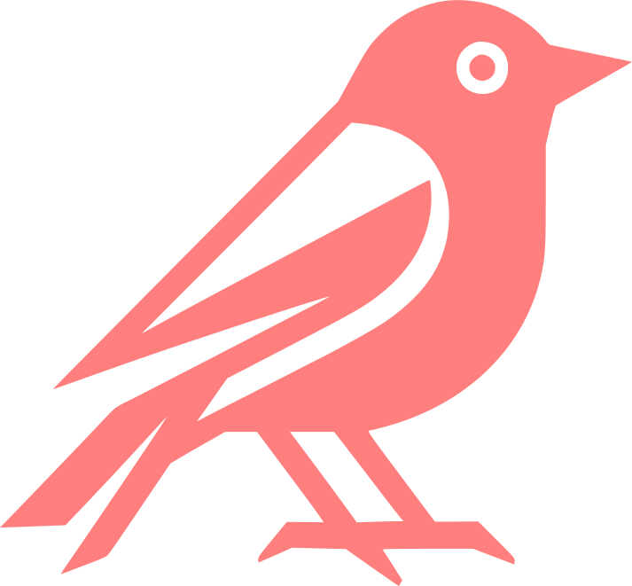

Projects [projects]
Projects [projects]
- kodama  — A Typst-friendly static Zettelkästen site generator. GPL-3.0.
- algol
 — A experimental symbolic computation tool. MIT License.
— A experimental symbolic computation tool. MIT License. - unitex.ts — A transpiler that converts TeX into Unicode. Try it here. MIT License.
- unitex.rs — Rewrite unitex in Rust. GPL-3.0. W.I.P.
- maxima android — A neo fork of Yasuaki Honda’s Maxima on Android. AGPL-3.0.